File: 000180.gt.txt (if the image is defective, simply delete all Arabic text and the line will be excluded)
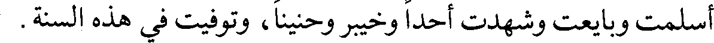
أسلمت وبايعت وشهدت أحدا وخيبر وحنينا، وتوفيت في هذه السنة.
File: 000181.gt.txt (if the image is defective, simply delete all Arabic text and the line will be excluded)
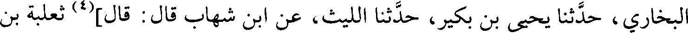
البخاري، حدثنا يحيى بن بكير، حدثنا الليث، عن ابن شهاب قال: قال](4) ثعلبة بن
File: 000182.gt.txt (if the image is defective, simply delete all Arabic text and the line will be excluded)
أبي مالك:
File: 000183.gt.txt (if the image is defective, simply delete all Arabic text and the line will be excluded)
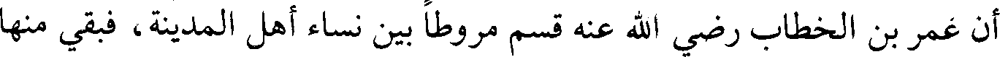
أن عمر بن الخطاب رضي الله عنه قسم مروطا بين نساء أهل المدينة، فبقي منها
File: 000184.gt.txt (if the image is defective, simply delete all Arabic text and the line will be excluded)
مرط جيد، فقال له بعض من عنده: يا أمير المؤمنين، اعط هذا ابنة رسول الله صلعم التي
File: 000185.gt.txt (if the image is defective, simply delete all Arabic text and the line will be excluded)
عندك - يريدون أم كلثوم، فقال: أم سليط أحق به، فإنها ممن بايعت رسول الله صلعم،
File: 000186.gt.txt (if the image is defective, simply delete all Arabic text and the line will be excluded)
ثم دخلت
File: 000187.gt.txt (if the image is defective, simply delete all Arabic text and the line will be excluded)
سنة أربع عشرة(1)
File: 000188.gt.txt (if the image is defective, simply delete all Arabic text and the line will be excluded)
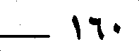
160
File: 000189.gt.txt (if the image is defective, simply delete all Arabic text and the line will be excluded)
فمن الحوادث فيها قصة القادسية(2)
File: 000190.gt.txt (if the image is defective, simply delete all Arabic text and the line will be excluded)
وذلك أن عمر بن الخطاب رضي الله عنه خرج في أول [يوم من](3) المحرم من
File: 000191.gt.txt (if the image is defective, simply delete all Arabic text and the line will be excluded)
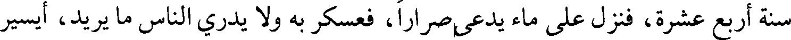
سنة أربع عشرة، فنزل على ماء يدعى صرارا، فعسكر به ولا يدري الناس ما يريد، أيسير
File: 000192.gt.txt (if the image is defective, simply delete all Arabic text and the line will be excluded)
أم يقيم؟ وكانوا إذا أرادوا أن يسألوه عن شيء رموه بعثمان أو بعبد الرحمن بن عوف،
File: 000193.gt.txt (if the image is defective, simply delete all Arabic text and the line will be excluded)
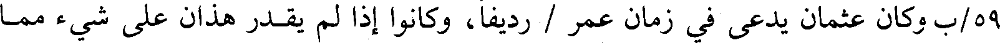
59/ب وكان عثمان يدعى في زمان عمر / رديفا، وكانوا إذا لم يقدر هذان على شيء مما
File: 000194.gt.txt (if the image is defective, simply delete all Arabic text and the line will be excluded)
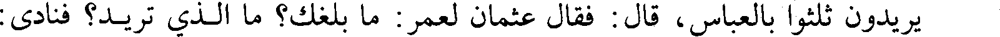
يريدون ثلثوا بالعباس، قال: فقال عثمان لعمر: ما بلغك؟ ما الذي تريد؟ فنادى:
File: 000195.gt.txt (if the image is defective, simply delete all Arabic text and the line will be excluded)
الصلاة جامعة، فاجتمع الناس، فأخبرهم الخبر الذي اقتصصناه في ذكر ما هيج أمر
File: 000196.gt.txt (if the image is defective, simply delete all Arabic text and the line will be excluded)
القادسية من اجتماع الناس على يزدجرد، وقصد فارس إهلاك العرب فقال عامة الناس:
File: 000197.gt.txt (if the image is defective, simply delete all Arabic text and the line will be excluded)
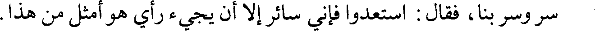
سر وسر بنا، فقال: استعدوا فإني سائر إلا أن يجيء رأي هو أمثل من هذا.
File: 000198.gt.txt (if the image is defective, simply delete all Arabic text and the line will be excluded)
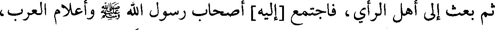
ثم بعث إلى أهل الرأي، فاجتمع [إليه] أصحاب رسول الله صلعم وأعلام العرب،
File: 000199.gt.txt (if the image is defective, simply delete all Arabic text and the line will be excluded)
فقال: أحضروني الرأي، فاجتمع ملؤهم على أن يبعث رجلا من أصحاب رسول
File: 000200.gt.txt (if the image is defective, simply delete all Arabic text and the line will be excluded)
الله صلعم ويقيم، ويرميه بالجنود، فإن كان الذي يشتهي من الفتح، فهو الذي يريد، وإلا
File: 000201.gt.txt (if the image is defective, simply delete all Arabic text and the line will be excluded)
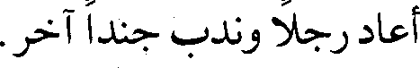
أعاد رجلا وندب جندا آخر.
File: 000202.gt.txt (if the image is defective, simply delete all Arabic text and the line will be excluded)
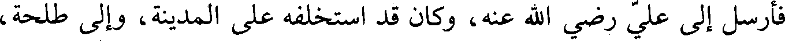
فأرسل إلى علي رضي الله عنه، وكان قد استخلفه على المدينة، وإلى طلحة،
File: 000203.gt.txt (if the image is defective, simply delete all Arabic text and the line will be excluded)
وكان قد بعثه على المقدمة، وجعل على المجنبتين الزبير وعبد الرحمن بن عوف، فقال
File: 000204.gt.txt (if the image is defective, simply delete all Arabic text and the line will be excluded)
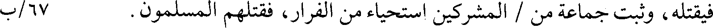
فيقتله، وثبت جماعة من / المشركين استحياء من الفرار، فقتلهم المسلمون. 67/ب
File: 000205.gt.txt (if the image is defective, simply delete all Arabic text and the line will be excluded)
وقتل ليلة الهرير ويوم القادسية من المسلمين ستة آلاف(1).
File: 000206.gt.txt (if the image is defective, simply delete all Arabic text and the line will be excluded)
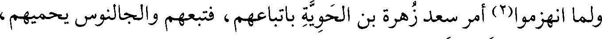
ولما انهزموا(2) أمر سعد زهرة بن الحوية باتباعهم، فتبعهم والجالنوس يحميهم،
File: 000207.gt.txt (if the image is defective, simply delete all Arabic text and the line will be excluded)
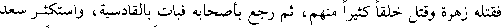
فقتله زهرة وقتل خلقا كثيرا منهم، ثم رجع بأصحابه فبات بالقادسية، واستكثر سعد
File: 000208.gt.txt (if the image is defective, simply delete all Arabic text and the line will be excluded)
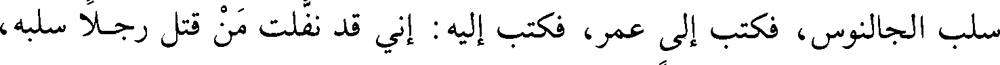
سلب الجالنوس، فكتب إلى عمر، فكتب إليه : إني قد نفلت من قتل رجلا سلبه،
File: 000209.gt.txt (if the image is defective, simply delete all Arabic text and the line will be excluded)
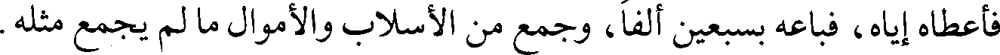
فأعطاه إياه، فباعه بسبعين ألفا، وجمع من الأسلاب والأموال ما لم يجمع مثله.
To Save: `Ctrl+s`, make sure to choose `Webpage, complete`!